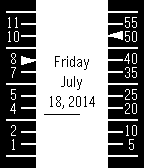

"Vertical Dials" is a watchface for the Pebble Smartwatch. It was designed and created by me, Donnie. It displays the time using two vertical dials: one for the hour and one for the minutes. The dials are on the far left and right of the watch face with room in the middle for the date, day of the week, and battery meter. On either dial there is a triangluar indicator that points to the current hour and minute. For example, the screenshot shows the time 8:50.
The thin horizontal black line under the day and year is the battery meter. As the battery drains, the line will shorten towards the left. As with my other watchfaces, Vertical dots also has bluetooth connection vibration: two short vibrations when a bluetooth connection is established and one long vibration when it disconnects.

The tick marks on the hour (left) side are in increments of one. The marks are labeled with the exception of 0 (which doesn't really matter), 3,6,9, and 12. The unmarked ticks are given extra-long tick marks. On the minute (right) side, the tick marks are in increments of 5. The marks are labeled similarly to the hour side.
You can check out my other Pebble watchfaces here.